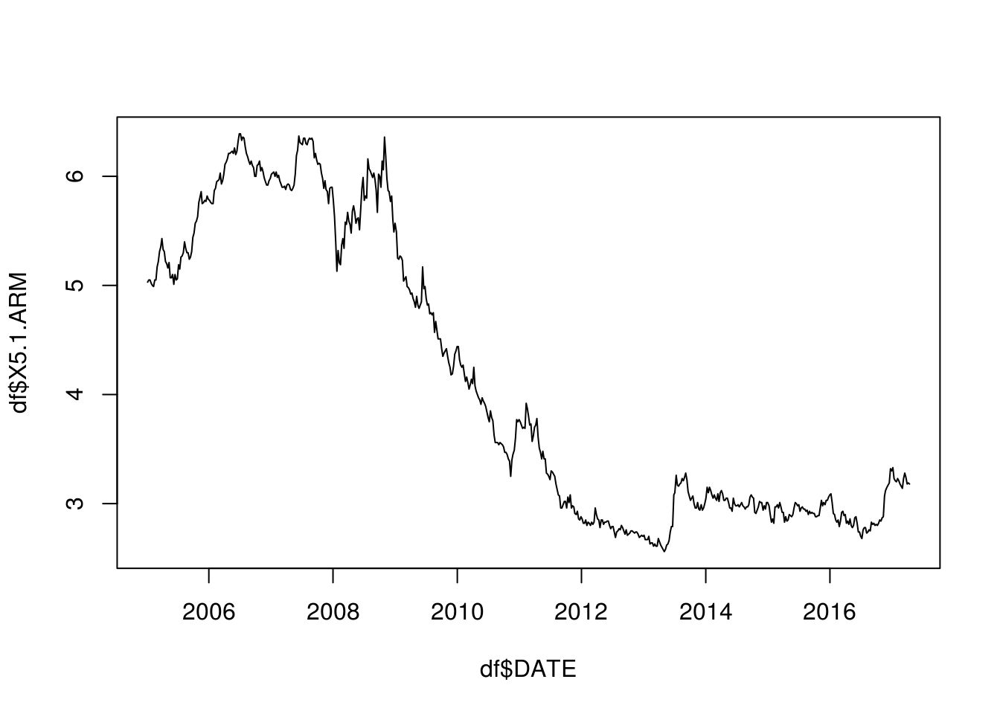
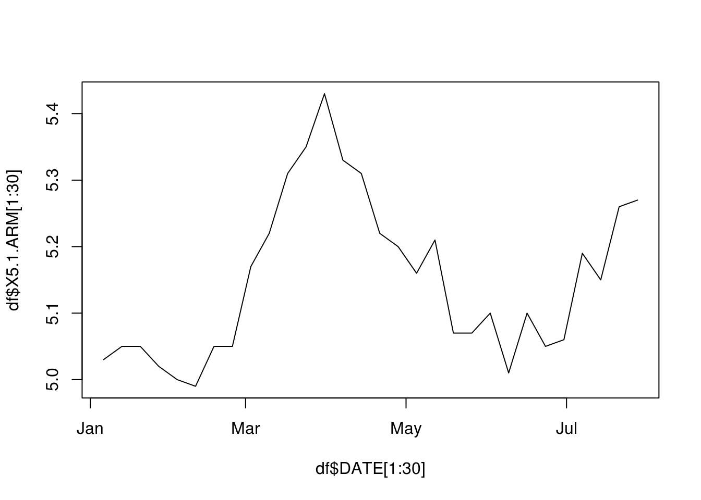
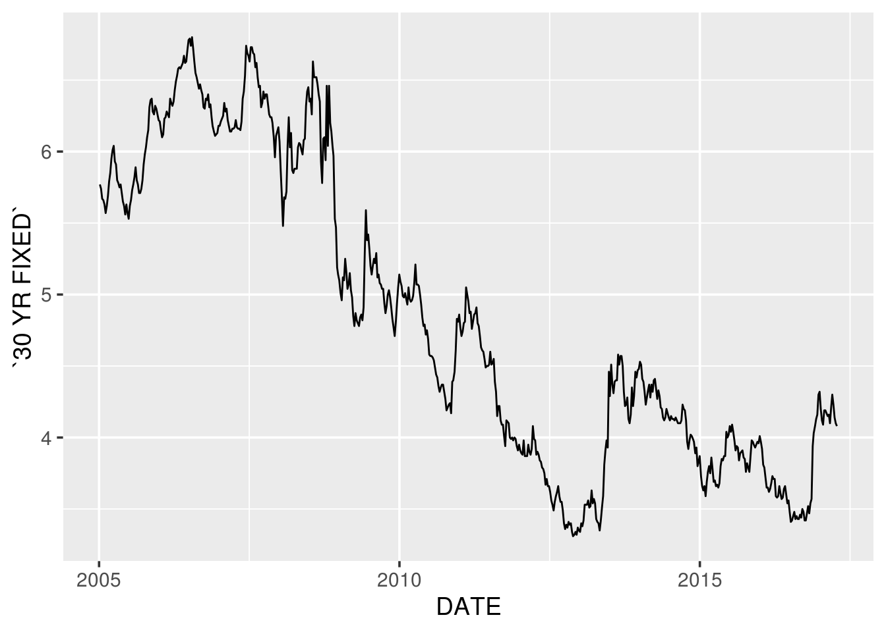
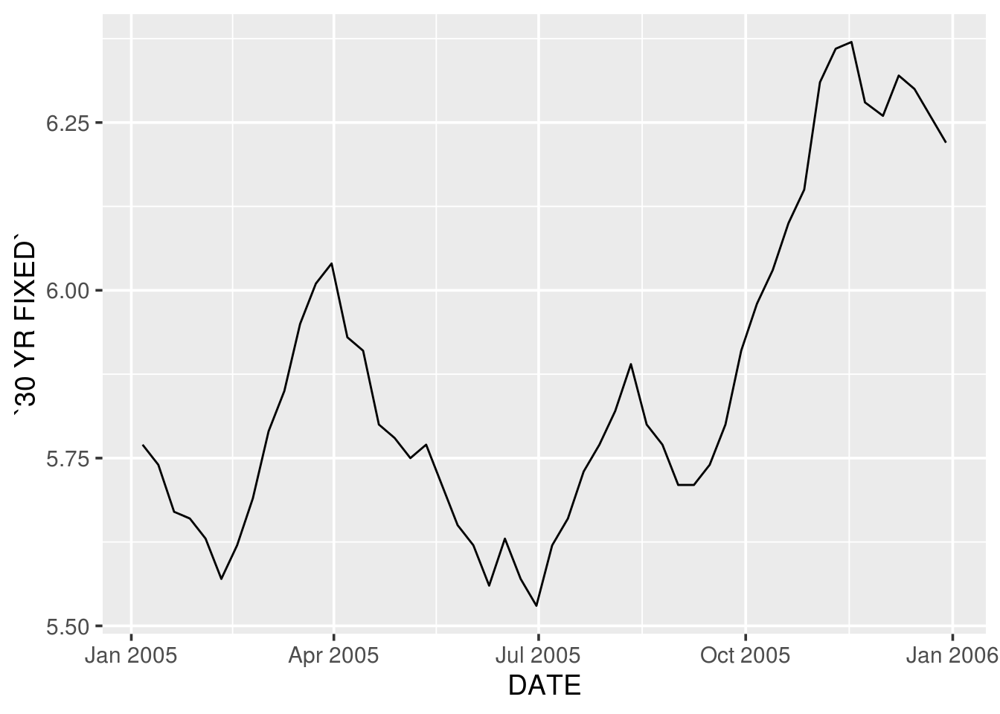
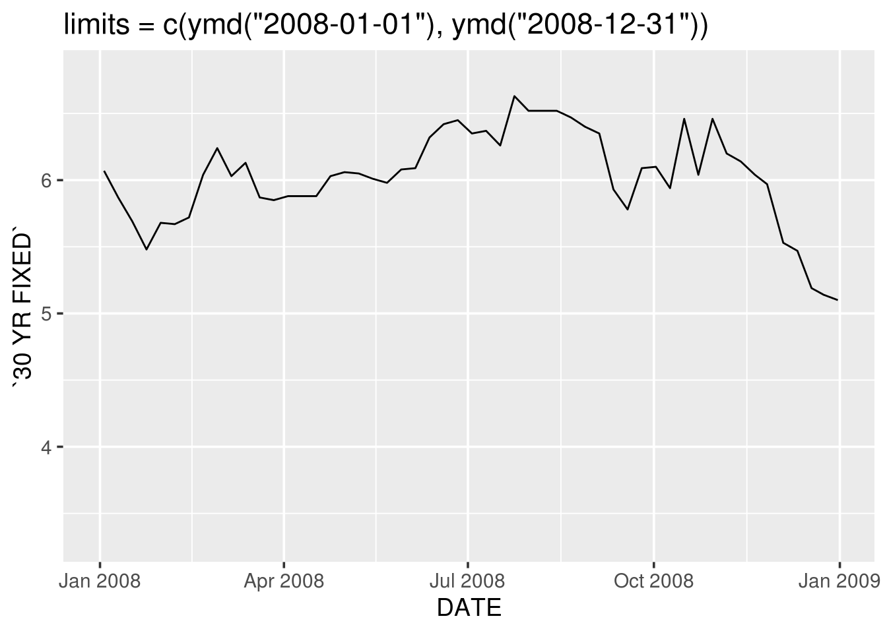
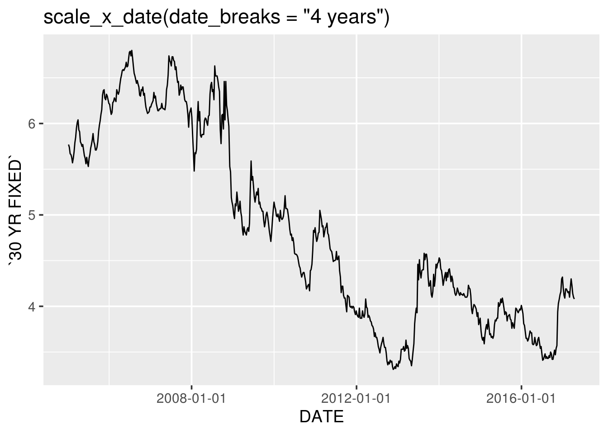
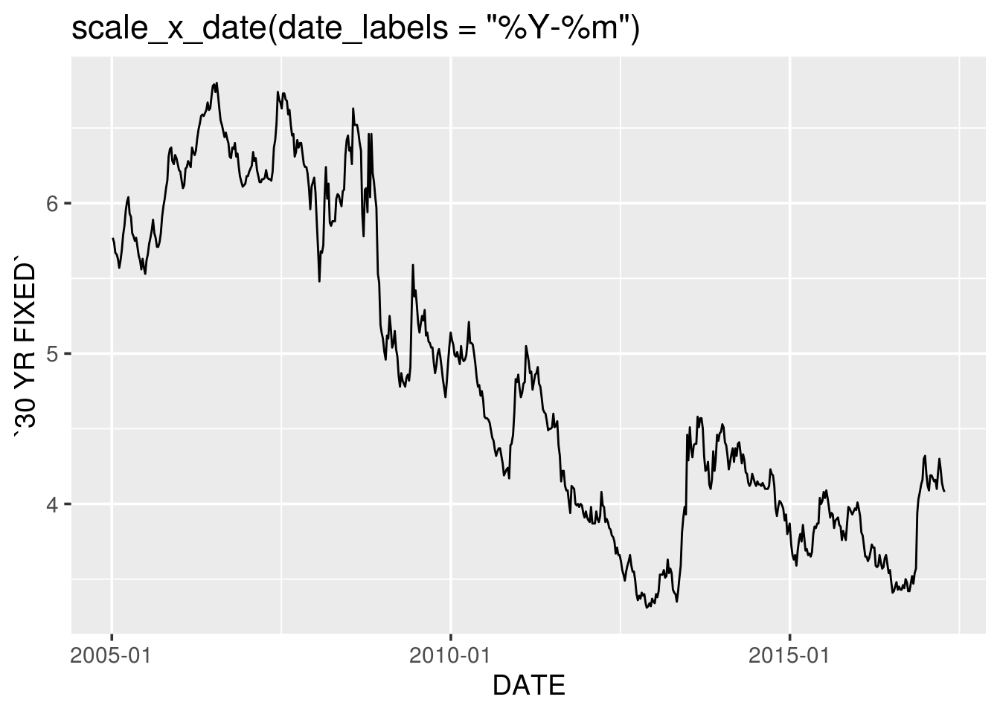
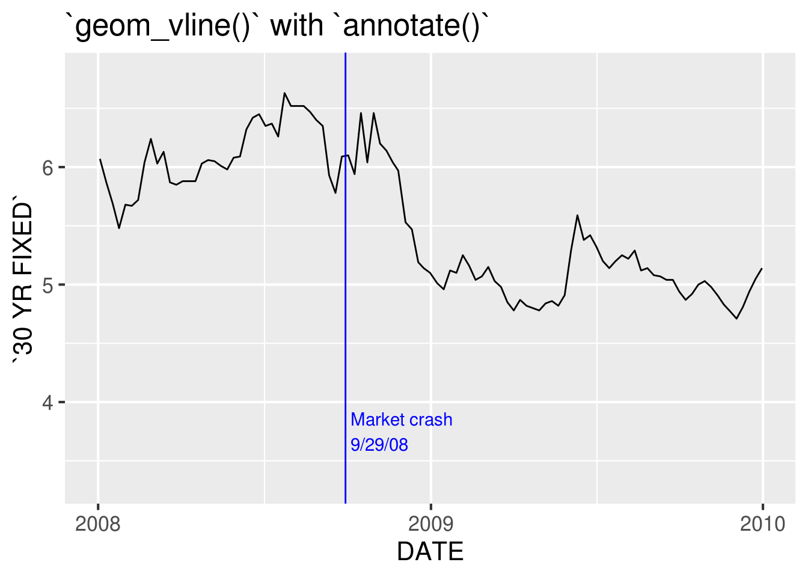

10 Dates in R

10.1 Introduction
Working with dates and time can be very frustrating. In general, work with the least cumbersome class. That means if your variable is years, store it as an integer; there’s no reason to use a date or date-time class. If your variable does not involve time, use the Date class in R.
10.2 Converting to Date class
You can convert character data to Date class with as.Date():
dchar <- "2018-10-12"
ddate <- as.Date(dchar)Note that the two appear the same, although the class is different:
dchar## [1] "2018-10-12"ddate## [1] "2018-10-12"class(dchar)## [1] "character"class(ddate)## [1] "Date"If the date is not in YYYY-MM-DD or YYYY/MM/DD form, you will need to specify the format to convert to Date class, using conversion specifications that begin with %, such as:
as.Date("Thursday, January 6, 2005", format = "%A, %B %d, %Y")## [1] "2005-01-06"For a list of the conversion specifications available in R, see ?strptime.
The tidyverse lubridate makes it easy to convert dates that are not in standard format with ymd(), ydm(), mdy(), myd(), dmy(), and dym() (among many other useful date-time functions):
lubridate::mdy("April 13, 1907")## [1] "1907-04-13"Try as.Date("April 13, 1907") and you will see the benefit of using a lubridate function.
10.3 Working with Date Class
It is well worth the effort to convert to Date class, because there’s a lot you can do with dates in a Date class that you can’t do if you store the dates as character data.
Number of days between dates:
as.Date("2017-11-02") - as.Date("2017-01-01")## Time difference of 305 daysCompare dates:
as.Date("2017-11-12") > as.Date("2017-3-3")## [1] TRUENote that Sys.Date() returns today’s date as a Date class:
Sys.Date()## [1] "2018-10-23"class(Sys.Date())## [1] "Date"R has functions to pull particular pieces of information from a date:
today <- Sys.Date()
weekdays(today)## [1] "Tuesday"weekdays(today, abbreviate = TRUE)## [1] "Tue"months(today)## [1] "October"months(today, abbreviate = TRUE)## [1] "Oct"quarters(today)## [1] "Q4"The lubridate package provides additional functions to extract information from a date:
today <- Sys.Date()
lubridate::year(today)## [1] 2018lubridate::yday(today)## [1] 296lubridate::month(today)## [1] 10lubridate::month(today, label = TRUE)## [1] Oct
## 12 Levels: Jan < Feb < Mar < Apr < May < Jun < Jul < Aug < Sep < ... < Declubridate::mday(today)## [1] 23lubridate::week(today)## [1] 43lubridate::wday(today)## [1] 310.4 Plotting with a Date class variable
Both base R graphics and ggplot2 “know” how to work with a Date class variable, and label the axes properly:
10.4.1 base R
df <- read.csv("mortgage.csv")
df$DATE <- as.Date(df$DATE)
plot(df$DATE, df$X5.1.ARM, type = "l") # on the order of years
plot(df$DATE[1:30], df$X5.1.ARM[1:30], type = "l") # switch to months
Note the the change in x-axis labels in the second graph.
10.4.2 ggplot2
# readr
library(tidyverse)Note that unlike base Rread.csv(), readr::read_csv() automatically reads DATE in as a Date class since it’s in YYYY-MM-DD format:
df <- readr::read_csv("mortgage.csv")## Parsed with column specification:
## cols(
## DATE = col_date(format = ""),
## `5/1 ARM` = col_double(),
## `15 YR FIXED` = col_double(),
## `30 YR FIXED` = col_double()
## )g <- ggplot(df, aes(DATE, `30 YR FIXED`)) +
geom_line() +
theme_grey(14)
g
ggplot(df %>% filter(DATE < as.Date("2006-01-01")),
aes(DATE, `30 YR FIXED`)) +
geom_line() +
theme_grey(14)
Again, when the data is filtered, the x-axis labels switch from years to months.
10.4.2.1 Breaks, limits, labels
We can control the x-axis breaks, limits, and labels with scale_x_date():
library(lubridate)
g + scale_x_date(limits = c(ymd("2008-01-01"), ymd("2008-12-31"))) +
ggtitle("limits = c(ymd(\"2008-01-01\"), ymd(\"2008-12-31\"))")
g + scale_x_date(date_breaks = "4 years") +
ggtitle("scale_x_date(date_breaks = \"4 years\")")
g + scale_x_date(date_labels = "%Y-%m") +
ggtitle("scale_x_date(date_labels = \"%Y-%m\")")
(Yes, even in the tidyverse we cannot completely escape the % conversion specification notation. Remember ?strptime for help.)
10.4.2.2 Annotations
We can use geom_vline() with annotate() to mark specific events in a time series:
ggplot(df, aes(DATE, `30 YR FIXED`)) +
geom_line() +
geom_vline(xintercept = ymd("2008-09-29"), color = "blue") +
annotate("text", x = ymd("2008-09-29"), y = 3.75,
label = " Market crash\n 9/29/08", color = "blue",
hjust = 0) +
scale_x_date(limits = c(ymd("2008-01-01"), ymd("2009-12-31")),
date_breaks = "1 year",
date_labels = "%Y") +
theme_grey(16) +
ggtitle("`geom_vline()` with `annotate()`")
with